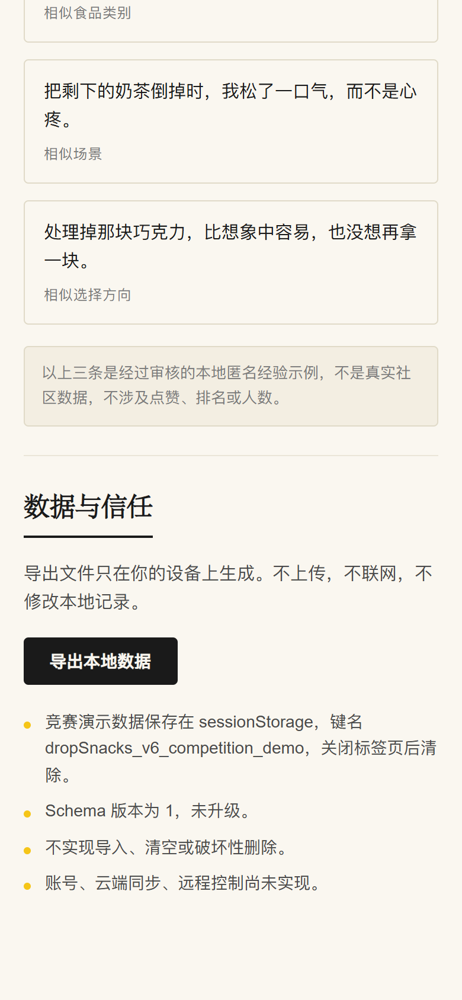

五个模块，一个时间维度（完整网页空间方向）
网页端承担食品历史、余波档案、语言偏好与数据权利，比手机端更宽、更安静。当前最小表面先实现余波、选择时间线、审核示例回声和本地导出；食品柜、语言偏好等仍属于后续扩展方向。
手机端处理“现在这件食品怎么办”，网页端处理“这些选择在时间里构成了什么”。两者不是大小关系，而是不同的工作面。
总览
最近处理、等待余波、需要回应、近期模式。一屏看见当下还有哪些未收束的选择。
食品柜
按注意力占用、等待余波、已收束、已归档分组。一件食品从进入到收束的完整轨迹都在这里。
余波收件箱
所有可回访项目集中在此，一次只展开一个问题。它安静地等待，而不是堆叠成待办清单。
历史与回顾
按食品、场景、感受、选择与时间查看长期模式。让一次次的纠结汇成可被理解的结构。
语言偏好
语气、长度、禁用表达、提醒风格都可调整。语言是可设置的结构，不是固定输出。
一个抽象的宽屏桌面
横向延展的矩形与细分隔线，暗示时间轴与档案布局，不画真实界面。
网页端是时间维度的产品，不是手机 Demo 的放大。它让一次次的纠结汇成可被理解的结构，而不只是更多的当下选择。
PRODUCT PROOF · 来自真实竞赛演示
把选择放回自己的时间里。
截图来自 官方演示数据。私人网页空间承担时间维度：已回答余波、最近选择、Shared Echoes 和本地 JSON 导出。Guest Mode · 无账号 · 无云端。
私人网页空间
当前余波、已回答余波与 Guest Mode 本地只读视图。无账号无云端。

本地数据导出
当前浏览器 · JSON 导出 · 无账号、无云端。删除与用户贡献撤回仍是未来能力。

来到这里，理解什么
网页端是时间维度产品，不是手机 Demo 放大；公开概念与私人产品边界清楚。
时间维度的工作面
手机处理“现在这件怎么办”，网页处理“这些在时间里构成了什么”。它更宽、更安静，适合复盘。
本地私人空间已经开放
当前可以读取同一浏览器中的余波、选择时间线、审核示例回声并导出本地 JSON。身份、云端同步和完整数据控制仍属于后续阶段。